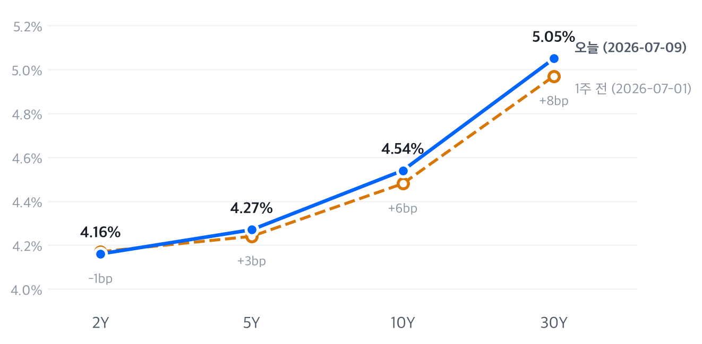

SK하이닉스의 사상 최대 외국기업 미 IPO(265억 달러, 첫날 +15%)와 AI 컴퓨트 랠리(엔비디아 +4.0%)가 3대 지수를 견인했으나, 러셀2000(-0.49%)과 헬스케어(-0.82%)의 약세에서 드러나듯 상승은 대형·AI 관련주에 국한된 좁은 랠리였다.
7/10 장은 이벤트 드리븐 랠리 성격이 강했다. SK하이닉스의 사상 최대 외국기업 미 IPO(공모가 $149 → 첫날 $171대, 시총 $1.25조)가 반도체·AI 밸류체인 전반에 훈풍을 불어넣었고 메타의 AI 컴퓨트 사업을 긍정적으로 평가한 SemiAnalysis 리포트가 더해지며 커뮤니케이션 서비스·기술 섹터 강세로 이어졌다. 엔비디아(+4.0%)가 최대 수혜주였다.
크로스에셋 조합이 묘하다. 주식 상승·금리 하락·엔화 강세·유가 하락 — 언뜻 골디락스처럼 보이지만 각 자산의 드라이버가 전부 다르다. 주식은 IPO·AI 이벤트, 금리는 고용 부진, 엔화는 지정학 헤지, 유가는 프리미엄 언와인드다. 서로 다른 이유로 만들어진 '우연한 정합성'은 지속력이 약하다. 러셀2000과 헬스케어의 소외, 채권의 방어적 랠리는 시장 저변의 리스크 심리가 아직 살아있음을 보여준다.
결국 시험대는 7/14 CPI다. 상회하면 '고용 둔화 + 인상 종료' 프라이싱이 무너지며 주식·채권이 동시에 되돌려질 수 있고, 하회하면 불 스티프닝과 위험자산 랠리가 정합성을 얻는다. 그 전까지는 베타를 늘리기보다 실적 시즌 개막에 맞춘 이벤트 중심 종목 장세로 대응하는 편이 낫다.
| 지수 | 종가 | %등락 |
|---|---|---|
| Nasdaq | 26,281.61 | +0.29% |
| S&P 500 | 7,575.39 | +0.42% |
| Dow | 52,637.01 | +0.29% |
| Russell 2000 | 2,977.81 | -0.49% |
| S&P 500 Growth | 138.59 | +0.60% |
| S&P 500 Value | 230.49 | +0.25% |
| 섹터 (등락률 순) | 종가 | %등락 |
|---|---|---|
| Materials | 50.89 | +1.25% |
| Consumer Staples | 84.12 | +1.11% |
| Communication Svcs | 111.64 | +1.02% |
| Utilities | 45.41 | +0.62% |
| Energy | 55.08 | +0.47% |
| Industrials | 181.92 | +0.45% |
| Consumer Disc. | 117.24 | +0.33% |
| Financials | 55.71 | +0.31% |
| Technology | 185.78 | +0.23% |
| Health Care | 160.84 | -0.82% |
지수는 마감 숫자보다 장중 궤적이 말해주는 게 많았다. 나스닥은 개장 직후 한 시간 만에 시가 대비 0.6% 안팎 밀리며 저점(26,012, 10:30 ET)을 찍었지만, SK하이닉스 ADR이 공모가를 크게 웃돌며 거래를 시작하고 엔비디아가 개장가(201.92달러)를 그대로 저점 삼아 종일 우상향(시가 대비 +4.5%)하자 오후 내내 낙폭을 되돌려 15:30 고점(26,301) 부근에서 마쳤다.
S&P 500도 같은 궤적(10:30 저점 → 막판 고점)이었다. 반면 러셀2000은 개장 직후가 그날 고점이었고 10:30까지 시가 대비 1.1% 급락한 뒤 끝내 회복하지 못했다 — 아침 조정은 함께 맞고 오후 반등에서는 소외된 셈이다.
전략 해석지수 흐름만 보면 무난한 강세장이지만 내부는 그렇지 않다. S&P 500 +0.42%의 상당 부분을 엔비디아(+4.0%)·메타 등 소수 메가캡이 만들었고, 같은 날 러셀2000은 -0.49%로 밀렸다. 실적 시즌을 앞두고 자금이 이익 가시성이 확보된 AI 대장주로 몰리는 전형적인 쏠림 장세다. Growth(+0.60%) vs Value(+0.25%) 스프레드 +34bp도 금리 하락(2Y -5bp)이 성장주의 듀레이션 부담을 덜어준 결과로 읽힌다.
섹터 순위도 리스크온과는 거리가 있다. Materials(+1.25%)가 1위에 올랐지만 그 뒤는 Staples(+1.11%)·Utilities(+0.62%) 등 방어주다. 경기민감주가 아니라 방어주와 AI 수혜주가 같이 오르는 조합은 지수 레벨 부담 속 로테이션·숏커버 성격이 짙다. 대응은 바벨이다 — AI 대형주 코어에 퀄리티 방어주를 붙이고, 러셀2000 상대강도가 돌아서기 전까지 소형주·고베타 언더웨이트를 유지한다.
| 만기 | 수익률 | 변동(bp) | 기준일 |
|---|---|---|---|
| 2Y | 4.16% | -5.0bp | 2026-07-09 |
| 5Y | 4.27% | -4.0bp | 2026-07-09 |
| 10Y | 4.54% | -2.0bp | 2026-07-09 |
| 30Y | 5.05% | -1.0bp | 2026-07-09 |

주간 변화: 2Y -1bp · 5Y +3bp · 10Y +6bp · 30Y +8bp — 단기물이 눌린 채 장기물이 밀려 오른 완만한 베어 스티프닝 (자료: FRED)
해석 — 2Y -5bp vs 10Y -2bp, 전형적인 불 스티프닝이다. 6월 고용 미스(+5.7만 vs 예상 +11만) 이후 프런트엔드가 '인상 사이클 막바지'를 다시 프라이싱하는 반면, 30Y는 -1bp에 그치며 5.05%에 머물렀다 — 장기물 랠리를 막는 건 재정·인플레이션 텀프리미엄이다. 선물시장이 9월 인상 가능성을 약 70%(CME FedWatch 기준 동결 29.8% · 25bp 인상 50.6% · 50bp 인상 19.6%)로 반영 중인 점을 감안하면 시장은 '한 번 더 인상 후 종료'와 '이미 종료' 시나리오 사이에서 표류 중이다. 워시 의장의 정책 프레임워크 재검토 태스크포스는 연준 리액션 함수 자체의 불확실성을 키워 장기 구간 변동성 프리미엄 요인으로 남는다.
전략 — 벨리(5Y) 오버웨이트가 리스크 대비 효율이 가장 좋다. 프런트엔드는 인상 재개 리스크, 30Y는 텀프리미엄 리스크에 각각 노출된 반면 5Y는 캐리·롤다운을 챙기며 커브 양쪽 꼬리를 피한다. 2s10s 스티프너는 유지하되 7/14 CPI 상회 시 나타날 베어 플래트닝을 손절 트리거로 잡는다.
| 통화 | 수준 | %등락 |
|---|---|---|
| DXY | 100.97 | +0.03% |
| USD/KRW | 1,498.87 | -0.30% |
| USD/JPY | 161.67 | -0.53% |
| EUR/USD | 1.1419 | -0.02% |
해석 — DXY +0.03% 보합이라는 헤드라인 뒤에서 아시아 통화만 움직였다. USD/KRW는 1,498.87로 1,500선을 하회했다 — SK하이닉스의 265억 달러 조달이 만든 원화 환전 수요 기대에 삼성전자(+2.52%) 강세가 겹친 결과다. 다만 조달 자금 상당분이 인디애나 공장 등 미국 내 투자로 배정돼 있어 실제 환전 규모는 기대보다 작을 수 있다. 엔화(-0.53%)는 강세 폭이 가장 컸는데, 호르무즈 헤지 수요에 미 금리 하락에 따른 금리차 축소가 더해졌다. 장중에도 되돌림 없이 뉴욕 오후(16:30 ET) 저점 161.28까지 완만하게 밀리는 일방향 흐름이었다. 유로는 자체 재료 부재로 보합. 달러 약세 추세 전환이라기보다 이벤트성 아시아 통화 강세로 보며, USD/KRW는 IPO 이벤트 소멸 후 1,500선 회복 시도 가능성을 열어둔다.
| 품목 | 가격 | %등락 |
|---|---|---|
| WTI | $71.41 | -0.93% |
| Brent | $76.01 | -0.38% |
| Natural Gas | $2.94 | -2.39% |
| Gold | $4,104.10 | -0.64% |
최대 변동: 천연가스(-2.39%) — EIA 주간 재고가 +61bcf로 5년 평균(+51bcf)을 웃돌았고, Freeport LNG가 7/10부터 설비 정비에 들어가 수출 물량 감소가 겹쳤다. 향후 2주 폭염 강도가 완화된다는 기상 전망까지 더해지며 8주 저점권까지 밀렸다(EnergyNow·Yahoo Finance 보도).
해석 — 이번 주 호르무즈에서 선박이 잇따라 피격됐는데도 WTI는 -0.93%, $71.41까지 밀렸다. 시장이 이번 공격을 '공급 차질'이 아니라 '협상 지렛대'로 읽고 있다는 뜻이고, 그간 쌓인 지정학 프리미엄의 언와인드가 진행 중이다. 다만 휴전 자체가 깨지면 프리미엄은 순식간에 복원된다 — $70 하회를 추격 매도할 국면은 아니다. 금은 금리 하락이라는 우호 재료에도 -0.64% 조정을 받았는데, 위험선호 회복이 헤지 수요를 이연시킨 단기 소강으로 보이며 $4,100 부근 지지 여부가 관건이다.
장중 흐름 — WTI는 오전 10시 반경 73.16달러까지 오르며 호르무즈 리스크를 가격에 반영하는 듯했지만 한 시간 만에 70.77달러로 급반락했고, 이후 낙폭을 일부만 되돌린 채 마감했다 — 지정학 헤드라인보다 전면전 회의론이 장중에 우위를 점한 모양새다. 금도 뉴욕 오전(10:30 ET)에 4,081달러까지 밀린 뒤 제한적으로만 회복했다.
| 자산군 | 판단 | 전략 근거 |
|---|---|---|
| 주식 | 중립 / 바벨 | AI 대형주 코어 + 퀄리티 방어주, 소형주·고베타 언더웨이트 |
| 채권 | 벨리(5Y) 오버웨이트 | 캐리·롤다운 확보, 커브 양끝 리스크 회피. CPI 확인 전 장기물 보류 |
| FX | 달러 중립 | 이벤트성 아시아 통화 강세. USD/KRW 1,500선 회복 시도 가능성 |
| 원자재 | 원유 중립, 금 중립 | 지정학 프리미엄 언와인드 진행, 추격 매도 자제. 금 $4,100 지지 확인 |
| 메모리 | 선별적 비중확대 | HBM 노출 중심 압축, 급등락 구간 분할 접근 |
| AI 인프라 | 서브섹터 차별화 | 전력(GEV)·광통신(LITE) 상대 우위, 커스텀 실리콘은 내재화 리스크 |
공모가 $149 → 첫날 $171대, $265억 조달로 외국기업 사상 최대 미 IPO(시총 $1.25조). 자금은 용인 팹, 청주 패키징 확장, 인디애나 AI 메모리 공장, EUV 장비에 투입. 전략: AI/HBM 수요 신뢰 재확인, 메모리 섹터 리레이팅 촉매. ADR 강세를 서울 현지가(-0.27%)가 아직 반영하지 못한 만큼 다음 거래일 수렴(갭업) 시도를 모니터링한다.
메타 AI 인프라 사업을 긍정 평가한 SemiAnalysis 리포트(메타 +6%)가 AI 컴퓨트 밸류체인에 파급, AMD +2% 동반(브로드컴 -0.3%, 인텔 -2.4%로 차별화). 전략: AI capex 사이클 확신은 재확인됐으나 밸류체인 내 승자 차별화가 심해지는 국면 — 지수보다 종목 선별이 성과를 가른다.
당일 섹터를 끌어내린 단일 뉴스는 보도되지 않았다. 약가 규제·마진 상한 등 정책 부담으로 헬스케어는 올해 들어 시장 대비 계속 뒤처져 왔고, 이날은 실적 시즌을 앞두고 자금이 AI·반도체로 순환 이탈하며 소외가 깊어졌다. 전략: 모멘텀 부재 구간이나 밸류에이션 매력은 누적 중 — 실적 가이던스 확인 후 역발상 진입 후보로 관찰.
| 종목 | 종가 | %등락 |
|---|---|---|
| Micron (MU) | $979.30 | -1.24% |
| Western Digital (WDC) | $582.59 | +0.79% |
| Seagate (STX) | $910.34 | +2.28% |
| Nvidia (NVDA) | $210.96 | +4.03% |
| Samsung Elec (005930.KS) | ₩285,000 | +2.52% |
| SK hynix (000660.KS) | ₩2,180,000 | -0.27% |
업계 뉴스 — 마이크론은 3분기 EPS +24% 서프라이즈(매출 $414.56억, 4분기 가이던스 $500억±$10억)를 기록, AI 메모리 수요에 대응해 2035년까지 미국 내 투자를 $2,500억 이상으로 확대 발표. 씨게이트도 EPS +17% 서프라이즈에 FCF $9.53억 기록. 메모리 섹터는 지난 한 주 극심한 변동성을 보였다 — 7/2 공급과잉 우려 급락(-4~11%), 7/6 UBS·씨티·BofA 강세 전환 반등, 7/7 삼성 실적 계기 재매도(-6~7%), 7/9 재반등(+6~7%). 씨티는 2026~27년 DRAM 가격 상승 여력을 낙관적으로 제시한 것으로 보도된다.
투자 관점 — 구조적 수요는 마이크론의 $2,500억 투자 계획과 SK하이닉스의 사상 최대 조달이 재확인해줬다. 문제는 사이클의 위치다. 씨티가 2026~27년 DRAM 가격 강세를 전망하는 반면 지난주 급락을 촉발한 건 공급 증설 우려였고, 대규모 capex 발표는 수요 자신감인 동시에 중장기 공급 부담의 씨앗이기도 하다. 한 주 새 ±7% 스윙은 이 논쟁이 정리되지 않았다는 뜻이다. 포지션은 HBM 노출 중심으로 압축한다 — 씨게이트·WDC 등 AI 스토리지는 펀더멘털 대비 변동성이 낮고, 마이크론은 실적 서프라이즈에도 단기 차익실현 국면. SK하이닉스는 ADR 프리미엄과 서울 현지가의 괴리가 수렴하는 과정 자체가 단기 트레이드 기회다.
| 종목 | 분야 | 종가 | %등락 |
|---|---|---|---|
| Marvell (MRVL) | 커스텀 실리콘·네트워킹 | $235.81 | -3.04% |
| Coherent (COHR) | 광부품·트랜시버 | $324.50 | -0.84% |
| Lumentum (LITE) | 광통신·레이저 | $802.01 | +2.07% |
| GE Vernova (GEV) | 전력·그리드 | $1,091.57 | +1.52% |
| Vertiv (VRT) | 전력·냉각 인프라 | $318.86 | -1.56% |
업계 동향 — 7/10 당일 AI 인프라 밸류체인 내부에서 뚜렷한 차별화가 나타났다. 광통신 루멘텀(+2.07%)과 전력 GE 버노바(+1.52%)가 상승한 반면, 커스텀 실리콘·네트워킹의 마벨(-3.04%), 냉각의 버티브(-1.56%), 광부품 코히런트(-0.84%)는 하락했다. 마벨은 최근 분기 Carrier Infrastructure·Enterprise Networking·Consumer 세그먼트의 큰 폭 매출 감소와 시장 기대를 하회한 다음 분기 가이던스, 하이퍼스케일러들의 자체 실리콘 프로그램 가속 우려가 부담으로 작용한 것으로 보도된다(데이터센터 매출 비중 76%). 루멘텀·코히런트·버티브는 최근 AI 종목 중심의 지수 리밸런싱에서 S&P 500에 편입된 것으로 보도되며 GE 버노바·버티브는 하이퍼스케일러 데이터센터 투자에서 대규모 수주를 확보 중이다.
투자 관점 — 같은 AI 인프라인데 주가 방향이 갈린 이유가 중요하다. 마벨의 -3.04%는 AI 수요 둔화가 아니라 경쟁 구도의 문제다 — 하이퍼스케일러가 자체 실리콘을 가속하면 커스텀 ASIC·네트워킹 벤더의 파이가 직접 위협받는다. 반면 전력(GEV +1.52%)과 광연결(LITE +2.07%)은 어느 칩이 이기든 데이터센터가 지어지는 한 수요가 늘어나는 '픽앤셔블' 포지션이고, S&P 500 편입 보도가 수급까지 얹어줬다. AI capex 사이클 지속을 전제로 전력·광통신 서브섹터를 커스텀 실리콘 대비 오버웨이트한다. 리스크는 밸류에이션이다 — 편입 랠리로 멀티플이 이미 높아진 만큼 실적 시즌 가이던스 미스에 취약하다.
| 지표 | 축 | Actual | Forecast | 판정 |
|---|---|---|---|---|
| 비농업고용 (6월, 7/2) | Labor | +5.7만 | +11.0만 | 하회 ▼ |
| CPI (6월) | Inflation | 발표 예정 (7/14) | MoM -0.1% · YoY 3.9% (코어 +0.3% · 2.9%) | 발표 전 |
| PPI (6월) | Inflation | 발표 예정 (7/15) | MoM 0.0% · 코어 +0.4% (프리뷰 전망) | 발표 전 |
| 미시간대 소비자심리(7월분) | Consumption | 발표 예정 | 컨센서스 미공표 (6월 확정 49.5) | 발표 전 |
| GDP / PCE (Q2) | Activity | 발표 예정 (7/30) | 컨센서스 집계 전 | 발표 전 |
시그널 평가 — 7/10 당일 주요 지표 발표는 없었다(실적 시즌 앞둔 소강 구간). 가장 최근 지표인 6월 비농업고용은 예상(11.0만)을 큰 폭 하회한 5.7만(전월도 12.9만으로 하향조정), 레저·숙박업(-6.1만)이 부진 주도 — Labor축은 명확히 완화적(하회) 신호다. 그러나 선물시장은 9월 FOMC 인상 가능성을 약 70%(CME FedWatch: 25bp 50.6% + 50bp 19.6%, 동결 29.8%)로 반영해 Labor축(성장 둔화)과 정책금리 기대(매파적)가 상충한다. Activity·Consumption·Inflation축은 7/14 CPI, 7/15 PPI, 7/30 GDP/PCE 발표 전까지 판단 보류.
상충 시나리오 — CPI가 컨센서스(헤드라인 -0.1% MoM · 3.9% YoY, 코어 +0.3% · 2.9%)를 상회하면 인상 기대 강화로 장단기 금리 동반 상승과 성장주 밸류에이션 부담이 재부각된다. 하회하면 고용 둔화와 정합성이 확보되며 커브 스티프닝 심화와 위험자산 랠리가 이어질 공산이 크다.
향후 발표 일정 — CPI(7/14), PPI(7/15), 미시간대 소비자심리(7월분), GDP 1차·PCE(7/30).
자료: Yahoo Finance (yfinance), FRED (DGS2/DGS5/DGS10/DGS30). 뉴스 코멘터리는 Bloomberg, CNBC, Reuters, 24/7 Wall St., Yahoo Finance, Al Jazeera, Washington Post, KED Global, TradingKey, Sherwood News 등 공개 보도를 참고했으며, 금리 경로·재고·컨센서스 수치는 CME FedWatch, EIA, Morningstar, Kiplinger, Continuum Economics 집계 보도로 교차 확인함.